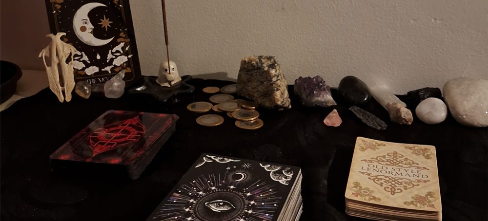
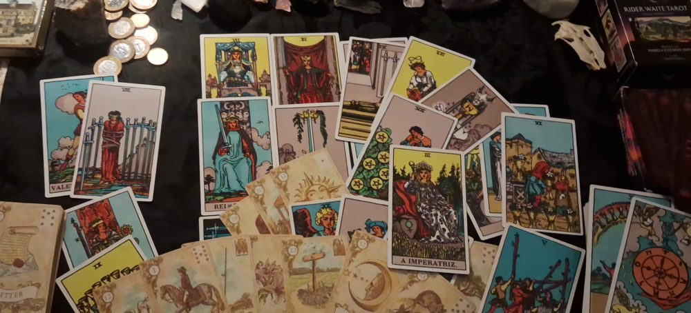

Em sua consulta não terá apenas sua dúvida respondida.
Verei o que acontece em torno da sua situação, pontos positivos e negativos, conselhos da espiritualidade para você nesse momento da sua vida (conselhos que podem ou não ter a ver com sua pergunta). Sempre com muita ética, sinceridade, transparência e empatia.
Para além disso, você terá também um espaço seguro para conversar, desabafar e tirar qualquer outra dúvida que fique após ou durante a tiragem. Nunca serei o cartomante que apenas responde sua pergunta, muito pelo contrário, sempre que enviar mensagem estarei ali para conversarmos por horas se quiser!
Acompanharei as atualizações da sua situação e vou aconselhando conforme a energia do momento e as orientações da espiritualidade. No final de todas as tiragens trago conselhos e suporte emocional para a sua situação, pois a consulta não acaba na resposta da sua dúvida, é necessário um caminho para trilhar e um direcionamento bem dado.
Serei seu cartomante de confiança sempre que precisar!
